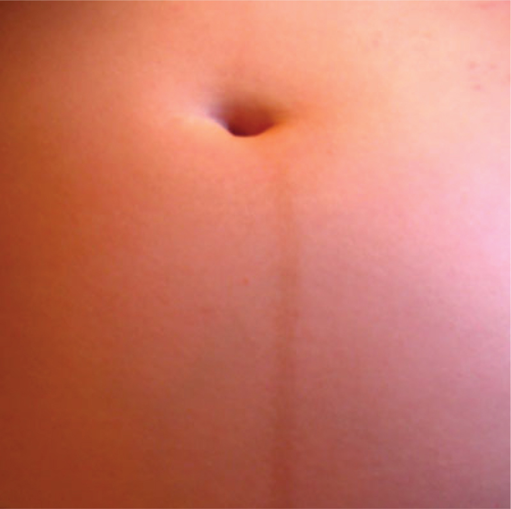

Página 10 · Parte G · Progesterona relaxa o tubo digestivo
Parte G · Progesterona relaxa o tubo digestivo
Refluxo e constipação sobem: progesterona relaxa tubos
×
Úlcera péptica melhora: ácido gástrico cai na gestação
ObstetríciaEEI frouxo + estômago “cheio” = refluxoIntubação obstétrica e risco de broncoaspiraçãoVesícula lenta e constipação — conduta comportamentalÁcido diminui: queimação ≠ úlcera piorandoItens 100–109
Tópico 1
EEI frouxo + estômago “cheio” = refluxo
Alterações gastrointestinais explicam queixas clássicas do pré-natal, em especial refluxo. Há relaxamento do esfíncter esofagiano inferior, muito ligado à progesterona. A gestante tem estômago “cheio” (esvaziamento/tonus comprometidos) + EEI incompetente → refluxo.
Tópico 2
Intubação obstétrica e risco de broncoaspiração
Cuidado com intubação em gestante (anestesia / terapia intensiva): risco maior de broncoaspiração. Estômago cheio + EEI incompetente = via aérea de alto risco. Algoritmo avançado de via aérea obstétrica = ponte de doença / anestesia (não desenvolver protocolo completo aqui).
Tópico 3
Vesícula lenta e constipação — conduta comportamental
A progesterona relaxa a vesícula e lentifica a musculatura lisa → favorece cálculo biliar na gestante. Constipação é queixa super comum: intestino mais lento. Conduta comportamental a explicar no pré-natal: hidratar mais, mais fruta/fibra, exercício físico.
Tópico 4
Ácido diminui: queimação ≠ úlcera piorando
A secreção ácida diminui na gravidez. Queimação ≠ “úlcera piorando”: a sensação é de refluxo; a doença erosiva péptica tende a melhorar (menos ácido), não a piorar.
Fecho do motor GI:progesterona relaxa EEI · estômago · vesícula · intestino · (e o ureter).
Por que importa na prática
orienta constipação/refluxo no pré-natal e acende alerta na indução anestésica.
Resumo operacional
Progesterona → refluxo + constipação + vesícula lenta; intubação = risco de aspiração; ácido↓ → úlcera tende a melhorar.
Conexão
o caso amarra constipação, falta de ar, dor lombar, edema e enjoo em um mapa único.

Linha nigra em gestante (22 semanas)
P10 pele/progesterona (âncora cutânea; sem inventar capítulo de fisiologia de pele)